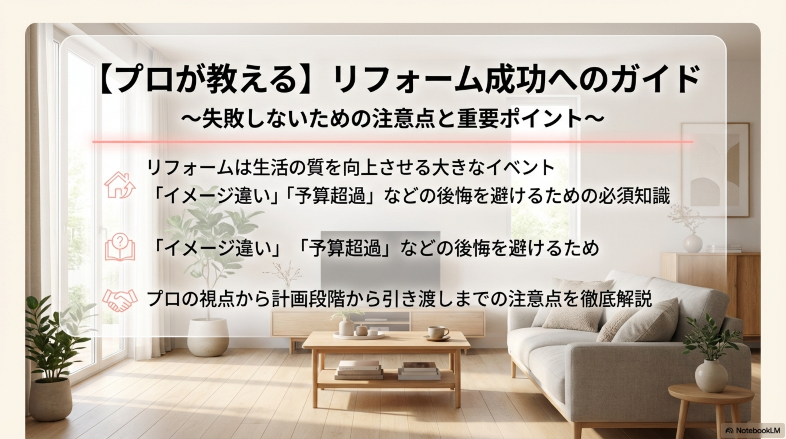
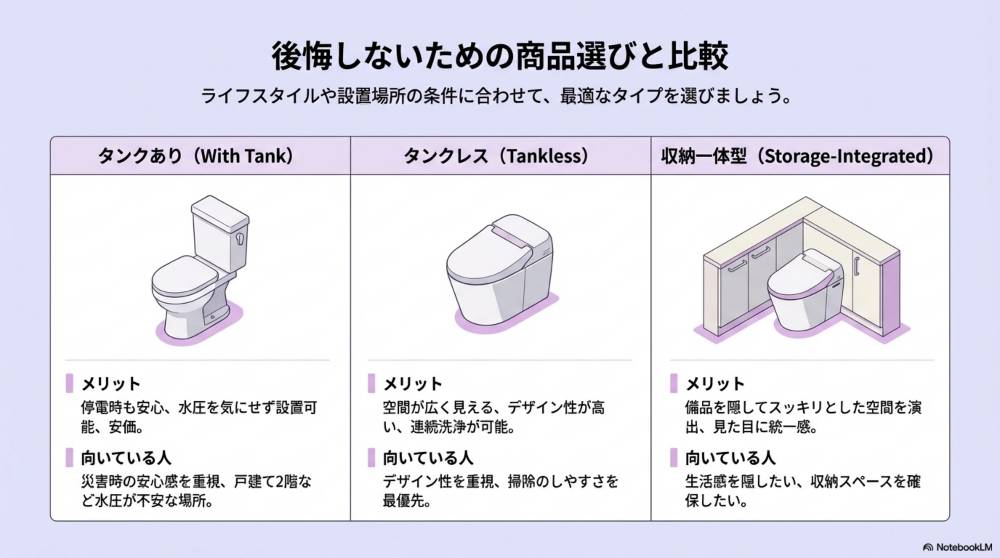

トイレは毎日家族全員が何度も使用する、家の中でも特に重要なプライベート空間です。「古くなったからきれいにしたい」「掃除を楽にしたい」といった理由でリフォームを検討する際、単に新しい便器に交換するだけと考えていませんか？実は、トイレリフォームには意外な落とし穴が多く潜んでいます。本記事では、リフォーム後に「こんなはずじゃなかった」と後悔しないために、プロの視点から具体的な注意点と成功のポイントを徹底解説します。

リフォームの計画段階ではデザインや最新機能に目が行きがちですが、実際に生活を始めてから気づく「使い勝手」の問題が多々あります。ここでは、初心者が陥りやすい代表的な失敗事例とその解決策をご紹介します。
近年人気のタンクレストイレなどはコンパクトに見えますが、実際の設置には注意が必要です。失敗例として多いのが、ショールームの広い空間で見たサイズ感と、自宅の限られたトイレスペースとのギャップです。
これらの失敗を防ぐためには、カタログ上の寸法だけでなく、現在のトイレスペースにおける「動作空間」をメジャーで正確に測っておくことが重要です。
「掃除が楽になる」という理由で選ばれることが多い「フチなし形状」や「タンクレストイレ」ですが、使い方や環境によっては逆効果になることがあります。
トイレは水回りであり、アンモニア臭や飛び散り汚れが発生しやすい場所です。リビングと同じ感覚でデザイン重視の壁紙（クロス）やフローリングを選ぶと、後悔の元になります。

トイレ選びで迷った際に役立つ、タイプ別の比較と、設置前に必ず確認すべき設備条件について解説します。
それぞれのタイプには明確な特徴があります。ライフスタイルや予算に合わせて選びましょう。
| 種類 | メリット | デメリット | 向いている人 |
|---|---|---|---|
| タンクあり | 安価で導入しやすい 停電時も水を流しやすい 水圧の影響を受けにくい | タンクの分だけ奥行きが必要 タンク裏の掃除が大変 デザインに圧迫感がある | 予算を抑えたい人 戸建ての2階など水圧が不安な場所 災害時の安心感を重視する人 |
| タンクレス | デザインがスタイリッシュ 空間が広く使える 連続して流せる（水道直結） | 本体価格が高め 別途手洗い場の設置が必要 設置には最低水圧条件がある | デザイン性を重視する人 トイレ空間を広く見せたい人 掃除のしやすさを最優先する人 |
| 収納一体型 | タンクや配管を隠してスッキリ 掃除道具やトイレットペーパーを収納可能 見た目に統一感が出る | 設置には一定の幅と奥行きが必要 タンクレスより高価になる場合がある 便器交換時の選択肢が限られる | 生活感を隠したい人 収納スペースを確保したい人 ホテルのような空間にしたい人 |
気に入ったトイレが見つかっても、建物の構造上設置できない場合があります。特に注意が必要なのが「排水方式」と「排水芯（はいすいしん）」の位置です。
古いトイレ（特に和式や、暖房便座機能のない洋式）からリフォームする場合、トイレ内にコンセントがないことがあります。最新の温水洗浄便座は電気を使用するため、コンセントの新設工事が必要です。
また、多機能なトイレは消費電力が高いものもあるため、ブレーカーが落ちないよう、専用回路を引く必要があるかどうかも業者に確認してもらいましょう。
リフォームにおいて予算管理とスケジュールの把握は非常に重要です。工事中に「トイレが使えない」という不便さをどう乗り切るかも計画しておきましょう。
トイレリフォームの費用は、選ぶ製品のグレードと工事内容によって大きく変動します。
見積もりを取る際は、予期せぬ修繕（床下の腐食など）に備えて、予算に10%程度の予備費を組み込んでおくと安心です。
リフォーム期間中は自宅のトイレが使用できません。事前に以下の対策を検討してください。
今は健康でも、10年後、20年後のことを考えて「バリアフリー」を意識したリフォームを行うのが賢明です。
満足のいくリフォームになるかどうかは、業者選びにかかっています。トラブルを回避し、適正価格で工事を行うためのポイントを解説します。
3社程度から相見積もりを取り、総額だけでなく内訳を比較しましょう。以下の項目が明確に記載されているか確認してください。
極端に安すぎる見積もりは、必要な工程が省かれていたり、追加料金が発生するリスクがあったりするため注意が必要です。
トイレリフォームには、国や自治体の補助金が使える場合があります。これらを知らずに契約・着工してしまうと、受給資格を失うことが多いため、必ず「契約前」に確認・相談してください。
最新のトイレは精密な電子機器です。陶器部分は長持ちしても、温水洗浄便座のノズルやセンサー、リモコンなどの電子部品は7〜10年程度で故障する可能性があります。
メーカー保証（通常1〜2年）に加え、施工業者が独自に提供する「延長保証（5年〜10年）」に加入できるかを確認しましょう。また、水漏れなどの緊急トラブル時にすぐ駆けつけてくれる地元の業者であるかどうかも、選定の重要なポイントです。

トイレリフォームの成功は、単に新しい製品を買うことではなく、家族全員が快適に使える空間を作り上げることです。「サイズと動作空間の確認」「掃除のしやすさと機能のバランス」「将来を見据えたバリアフリー」の3点を軸に検討すれば、大きな失敗は防げます。
また、費用面では補助金を賢く活用し、信頼できる業者と綿密な打ち合わせを行うことが大切です。本記事で紹介した注意点とチェックリストを活用して、毎日が快適で清潔感あふれる理想のトイレ空間を手に入れてください。